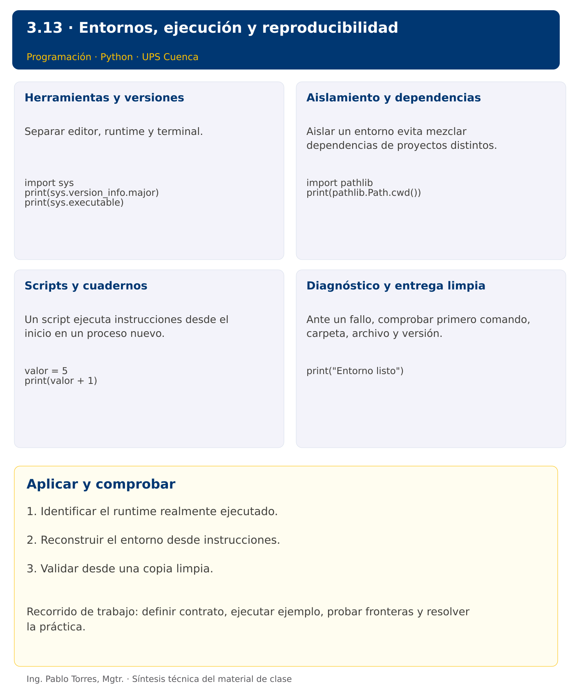

Programación

3.13 · Entornos, ejecución y reproducibilidad · Python
Autor: Ing. Pablo Torres, Mgtr.
Unidad 3: Lenguaje de Programación
Índice del curso · Versión Java · Presentación · Anterior
Conceptos · Demostración · Práctica de clase · Lo esencial
Contexto. Un programa debe ejecutarse fuera de la sesión donde fue escrito. Identificar intérprete, directorio de trabajo y dependencias evita que el resultado dependa accidentalmente de un editor o de celdas ejecutadas en otro orden.
Prerrequisitos. Módulos, punto de entrada y terminal.
1. Conceptos y ejemplos
1.1. Herramientas y versiones
Separar editor, runtime y terminal. El editor no garantiza qué intérprete ejecuta. Registrar versión del lenguaje y comandos de ejecución. En este curso, los programas solo utilizan bibliotecas estándar. La configuración debe ser suficiente para repetir ejemplos y no añadir servicios, bases de datos o gestores que no intervienen en el problema.
Aplicar en Python. Comprobar python3 --version y python3 -c "import sys; print(sys.executable)". En Windows usar py --version y py -c. Elegir ese mismo intérprete en el editor. La versión objetivo se fija en .python-version como dato para herramientas compatibles, no como instalación automática.
import sys
print(sys.version_info.major)
print(sys.executable)
1.2. Aislamiento y dependencias
Aislar un entorno evita mezclar dependencias de proyectos distintos. Un entorno no es una máquina virtual ni garantiza reproducibilidad por sí solo: también se necesitan fuentes, versiones y datos. No distribuir binarios del entorno como parte del repositorio. Crear de nuevo desde instrucciones documentadas.
Aplicar en Python. Crear con python3 -m venv .venv. Activar en POSIX con source .venv/bin/activate y en PowerShell con .venv\Scripts\Activate.ps1 si la política local lo permite. También ejecutar directamente .venv/bin/python sin activar. No instalar paquetes para los ejemplos .py del curso.
import pathlib
print(pathlib.Path.cwd())
1.3. Scripts y cuadernos
Un script ejecuta instrucciones desde el inicio en un proceso nuevo. Un cuaderno conserva estado en el kernel entre celdas y puede aparentar funcionar gracias a variables definidas antes. Reiniciar y ejecutar todas las celdas en orden comprueba dependencias. Guardar código reutilizable en módulos y reservar el cuaderno para exploración.
Aplicar en Python. Un .ipynb es un documento JSON con celdas, metadatos y salidas. Su ejecución requiere un entorno compatible con Jupyter y un kernel Python, herramientas opcionales para el docente. Los ejercicios .py y las demostraciones no dependen de Jupyter.
valor = 5
print(valor + 1)
1.4. Diagnóstico y entrega limpia
Ante un fallo, comprobar primero comando, carpeta, archivo y versión. Separar error de instalación de error de sintaxis o de datos. Registrar stdout, stderr y código de salida cuando sea relevante. Una entrega reproducible incluye fuentes, datos autorizados e instrucciones, y excluye cachés, entornos y archivos personales.
Aplicar en Python. Usar python3 -m py_compile demo.py para comprobar sintaxis, sabiendo que no prueba el comportamiento. Agregar .venv y pycache a .gitignore. Ejecutar desde una copia limpia con entradas conocidas.
print("Entorno listo")
Los bloques breves anteriores ilustran una operación y pueden requerir variables o imports del contexto. Utilizar la demostración siguiente como programa completo.
Síntesis visual

2. Demostración guiada
Problema. Comprobar escritura y lectura UTF-8 en una ubicación temporal mediante la biblioteca estándar.
Contrato de esta demostración. Crear un archivo temporal, guardar Entorno listo, leer exactamente ese contenido y eliminarlo al finalizar. Esta prueba comprueba una capacidad concreta del entorno, no toda la instalación ni sus versiones.
Fuente: ejemplos/demo.py.
from pathlib import Path
from tempfile import TemporaryDirectory
with TemporaryDirectory() as carpeta:
ruta = Path(carpeta) / "prueba.txt"
ruta.write_text("Entorno listo", encoding="utf-8")
print(ruta.read_text(encoding="utf-8"))
Ejecutar
Abrir una terminal dentro de 03/3.13-entornos/python/ejemplos/ y ejecutar:
python3 demo.py
En Windows, usar py en lugar de python3 si esa es la instalación disponible. Comprobar primero su versión.
Salida esperada
Entorno listo
Interpretación. Seguir las asignaciones y los bloques en orden, identificar qué instrucción produce cada línea y contrastar con el contrato. Modificar un dato por vez y anticipar el resultado antes de ejecutar. La salida de referencia es una expectativa; el registro de verificaciones indica qué ejecuciones se realizaron.
Ejercicios prácticos progresivos
Resolver los siguientes ejercicios en orden. Entregar enunciado, fuente y resultado propio. Los casos mostrados permiten comprobar el contrato y no sustituyen una prueba adicional de frontera.
Ejercicio 01. Versión principal
Consultar el runtime desde código y comprobar que se ejecuta Python 3. En Java consultar java.version y comprobar la versión configurada sin codificar una ruta.
Caso de comprobación:
Python 3
Ejercicio 02. Ruta de intérprete
Obtener la ruta del intérprete y comprobar que existe. Mostrar únicamente “Intérprete localizado” para mantener portable la prueba.
Caso de comprobación:
Intérprete localizado
Ejercicio 03. Directorio de trabajo
Consultar el directorio de trabajo y verificar que es una carpeta. Mostrar “Directorio válido”.
Caso de comprobación:
Directorio válido
Ejercicio 04. Ruta relativa
Construir datos/entrada.txt con la biblioteca de rutas y mostrar su forma con barras /. No crear el archivo.
Caso de comprobación:
datos/entrada.txt
Ejercicio 05. Comprobación sintáctica
Compilar sintácticamente un script que muestra 2+3, sin ejecutarlo. Guardar cualquier compilado en carpeta temporal.
Caso de comprobación:
Sintaxis válida
Ejercicio 06. Proceso independiente
Ejecutar un programa temporal que muestre 2+3. Capturar y mostrar su salida.
Caso de comprobación:
5
Ejercicio 07. Entrada automatizada
Ejecutar un programa nuevo que lea un entero y muestre su doble. Enviar 9 por entrada estándar y capturar la salida.
Caso de comprobación:
18
Ejercicio 08. Código de error
Ejecutar un programa que termine con código 2. Detectar el código sin presentar la ejecución como exitosa.
Caso de comprobación:
Código: 2
Ejercicio 09. Comparación exacta
Ejecutar un programa que muestre “Total: 12”. Comparar stdout con “Total: 12” seguido de salto de línea y mostrar “Coincide”.
Caso de comprobación:
Coincide
Ejercicio 10. Entrega limpia
Simular una carpeta con main.py, README.md, .venv y pycache. Obtener solo los archivos entregables y mostrar sus nombres ordenados. No borrar carpetas reales.
Caso de comprobación:
README.md main.py
3. PC3.13 · Práctica de clase
Preparar una entrega reproducible de un programa propio de clasificación de datos. Incluir fuentes, entrada.txt, salida-esperada.txt, README y evidencia. Ejecutar desde una copia nueva fuera de la carpeta original. Verificar un caso normal y uno inválido. Excluir entornos, cachés y compilados. Registrar la versión real, sin copiar una versión supuesta.
Requisitos y restricciones
- Resolver en una sola versión, Python o Java.
- Mantener nombres y responsabilidades indicados; explicar cualquier adaptación idiomática.
- Aplicar únicamente los conceptos ya introducidos.
- Conservar las entradas cuando el enunciado lo exija.
- Distinguir valores fuera de contrato de errores que el programa debe gestionar.
Casos de aceptación de la PC
| Entrada / escenario | Resultado esperado |
|---|---|
| copia limpia con entrada válida | salida idéntica a salida-esperada.txt |
| entrada inválida | diagnóstico documentado |
| sin editor abierto | ejecución mediante terminal |
| inventario de entrega | sin .venv, pycache ni .class |
Probar y registrar evidencia
Crear una carpeta personal PC3.13 separada de las demostraciones. Guardar cada caso con entrada, resultado esperado y resultado real. Ejecutar python3 solucion.py desde esa carpeta. Para entradas de teclado, guardar casos/entrada-01.txt y redirigirla con < casos/entrada-01.txt. Para funciones, crear llamadas con los datos de la tabla.
- Registrar
evidencias/PC3.13.mdcon comandos, versión real, salidas y explicación. - Crear un commit funcional como
feat(pc3.13): implementar-regla-principal. - Obtener el hash real con
git rev-parse HEADy anotarlo en la evidencia. - Revisar el cambio con
git show HASHy comparar avances congit diff HASH_ANTERIOR HASH_ACTUAL. Sustituir los marcadores por hashes reales. - Agregar una prueba de frontera distinta de las incluidas y justificar qué error detectaría.
No se requiere proyecto acumulativo ni rúbrica individual de esta PC.
Lo esencial
- Identificar el runtime realmente ejecutado.
- Reconstruir el entorno desde instrucciones.
- Validar desde una copia limpia.